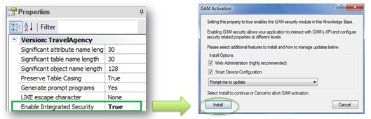
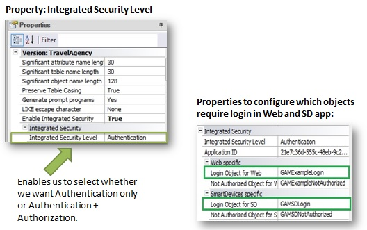
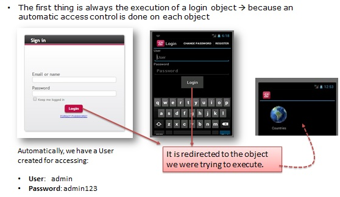

Most modern applications need some type of login, authentication and authorization scheme. To meet these requirements, GeneXus provides a security module called GeneXus Access Manager (GAM). This module takes care of the authentication and authorization features for Web and Smart Device applications. To use this module with all the security controls available, just set the Enable integrated security property to True in your knowledge base, at the active version level. After that, a dialog box is displayed for you to enable the GAM. Click on “Install”.  As a result, a security module developed with GeneXus will be imported. This module is integrated into our application to solve everything related to security. Once the security feature is enabled, we can select whether to use only the Authentication feature or Authentication+Authorization. This is done by setting the Integrated Security Level property. When the GAM is enabled, several changes are made in addition to importing objects. For example, properties are enabled to configure the login object for Web and Smart Device applications; •Login Object for Web property. It has the value GAMExampleLogin to indicate that this object will be used for Web application login.
•Login Object for SD property is set to GAMSDLogin, indicating the name of the object that will perform the login in Smart Device applications.
 The objects imported after enabling the GAM can be found in the folders GAM_Examples and GAM_Library. The GAM_Examples folder contains all the sample objects imported. Let's take a look at the contents of Web Panels and Panels for Smart Devices. These objects will be used for the authentication and authorization of users. More precisely, the objects GAMExampleLogin and GAMSDLogin are configured, as we've seen before, in the properties Login Object for Web and Login Object for Smart Devices. Several objects make up the GAM backend. That is to say, the backend is a Web application used to manage and configure users, roles, permissions, and so on In the GAM_Library folder we can see external objects with the necessary settings to run the GAM APIs. APIs are functions that allow our KB to communicate with the GAM database, which is different than the database associated with our application. The GAM database contains information about users, roles, etc. Remember that the Rebuild All action must be run in the KB after enabling the GAM. At this moment, we are asked to create the database associated with the GAM. When the Rebuild All operation is completed, we can run the application with the GAM enabled. A login object is executed first. This object is automatically run as needed. In this case, since we haven't defined any type of authentication such as Facebook or Twitter, only local authentication is enabled by default. We can enter with the user “admin” and password: “admin123”. The login object was executed simply by setting the properties required to enable the GAM, without programming anything else. The reason is that when the GAM is used, an automatic access control is performed in each object. Once the login data has been entered, redirection is made to the object that it was trying to run. In the case of the SD applications, it is the Dashboard. This is the default behavior for Web and Smart Device applications.  See Built-in Security Module - GeneXus Access Manager (GAM) for additional information.
|